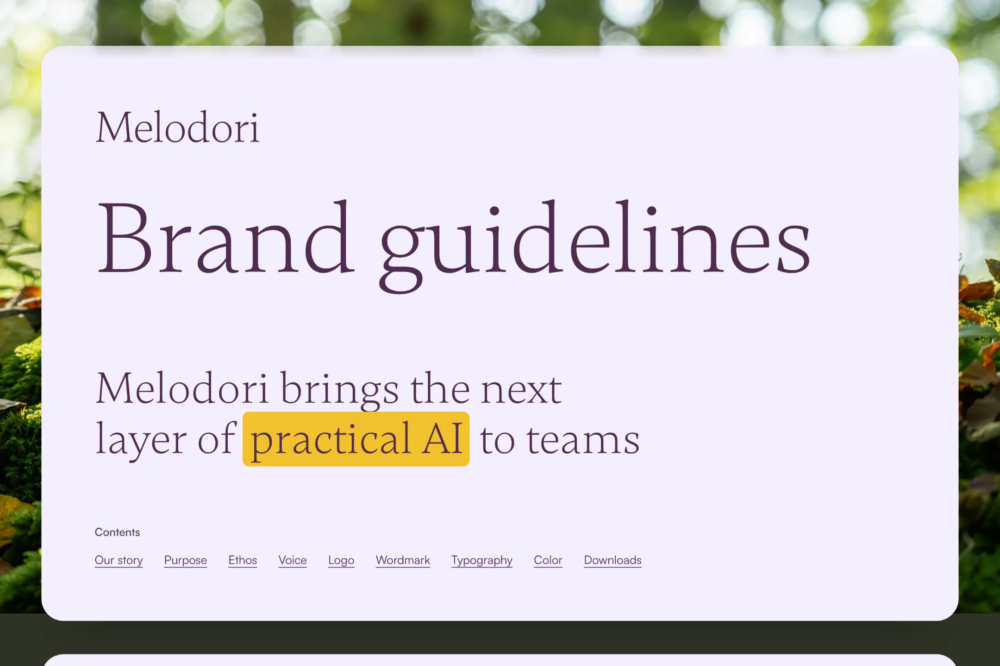
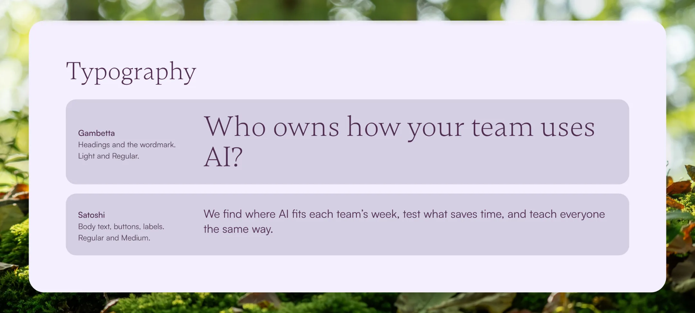
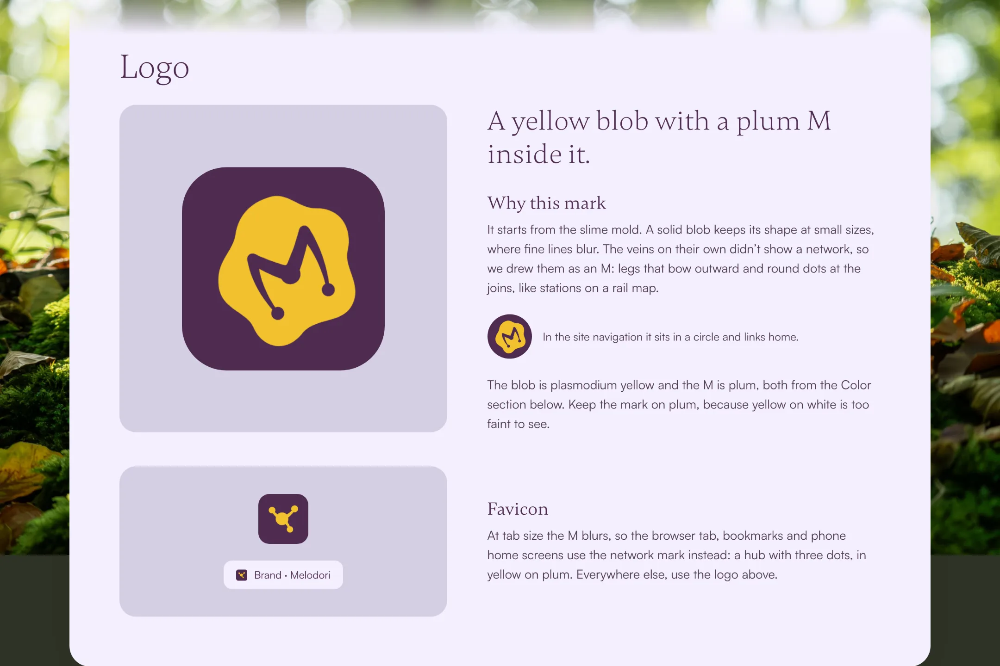
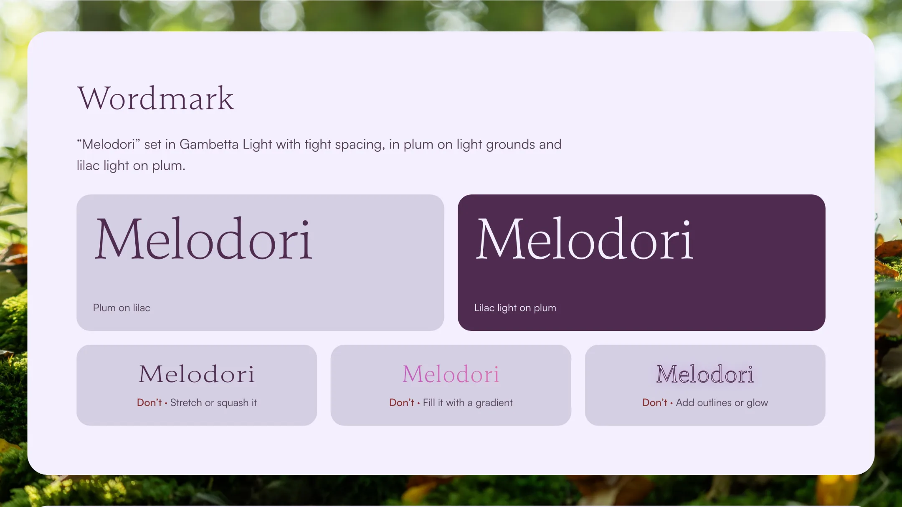
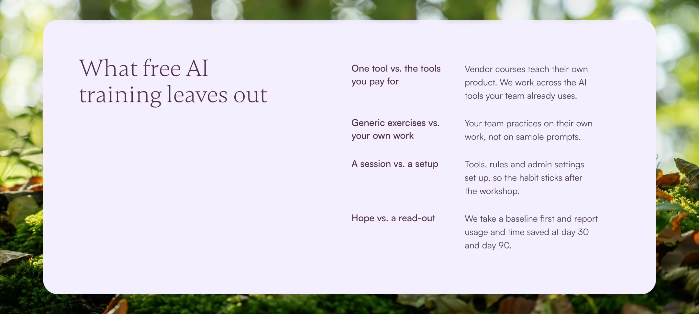
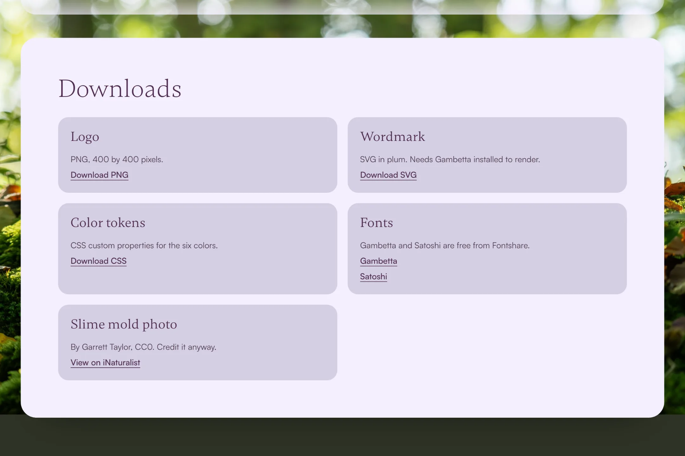

Melodori
A brand, a website and a written design system for an AI consultancy, so each new page follows the same rules as the last.
Brand · Web Design · Copywriting · Design System · 2026
The brief
Melodori helps teams get real work out of the AI tools they already pay for. Its buyers are team leads and owners who have heard every AI pitch and are wary of paying for training that changes nothing. The site had to say what Melodori does in plain words, look like it was made by people, and lead to one next step, a free scoping session.
So that the next page looks like the last one, the brand is written down as rules on a public page, melodori.com/brand, where anyone building for Melodori can read them.
The rules
The guidelines open with a contents list of nine sections, from the brand story to the downloads. Each section is short and says what to do.

Color is six solid colors, each with a job. Plum carries the main text, buttons and footer. Lilac is the background and lilac light fills the panels. Plasmodium yellow, taken from the slime mold in the brand story, is the accent and is used sparingly. Birch is a warm paper alternative and loam a deep ground color. There are no gradients.

Type is two families with set roles. Gambetta, in Light and Regular, is for headings and the wordmark. Satoshi, in Regular and Medium, is for body text, buttons and labels. The specimens are set in Melodori's own copy, so they show the voice at the same time.

The logo starts from the slime mold. A solid yellow blob keeps its shape at small sizes, where fine lines blur, and the veins inside it are drawn as a plum M, with round dots at the joins like stations on a rail map. The rules keep the mark on plum, because yellow on white is too faint to see. At tab size the M blurs, so browser tabs, bookmarks and phone home screens use a simpler network mark instead.

The wordmark section shows what not to do as well as what to do. It sets "Melodori" in plum on lilac and in lilac light on plum, then shows it stretched, filled with a gradient and outlined, each one labeled "Don't".

The voice rule is one line long. Melodori writes plainly and specifically, with no buzzwords, no slogans and no invented numbers. The copy on every page of the site is written to it.
The rules in use
Services shows the voice rule at work. The case against free vendor training is a four-row comparison, and each row sets two short phrases against each other. One tool is set against the tools you already pay for, and hope against a read-out of time saved at day 30 and day 90.

The pages are built from the same parts. Sections are lilac-light panels on the forest photo, each with a Gambetta heading, Satoshi text and gray-lilac cards. On a phone the panels stack in one column and keep the same parts. The screens below come from the homepage, the guidelines and the end of Services.

The last section of the guidelines has the files. It offers the logo as a PNG, the wordmark as an SVG, the six colors as CSS custom properties, links to the two free fonts, and the slime mold photo with its credit. Whoever builds the next page starts from the same files.

One next step
Every page leads to the same free scoping session. The homepage button, the closing panel on Services and the footer all point to it, so a visitor never has to choose between offers.
Result
The site is live at melodori.com with home, services, team, blog, brand guidelines and booking pages, all built from the rules above.
What this means for your product
A product keeps adding screens, often built by different people. Rules that are written down, with the colors and type shipped as files, let the next screen match the last one, whoever builds it.
Deliverables
- Brand identity and logo
- Brand guidelines and design system
- Website design and copy